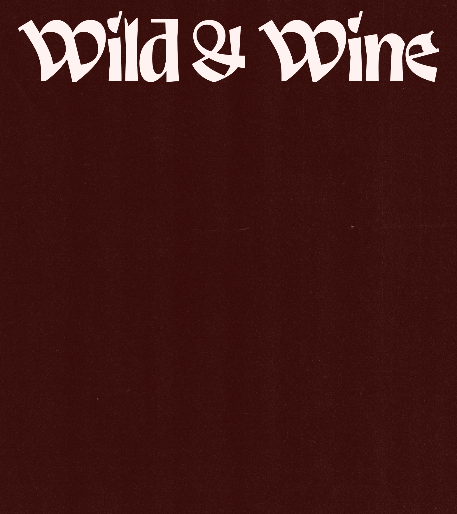
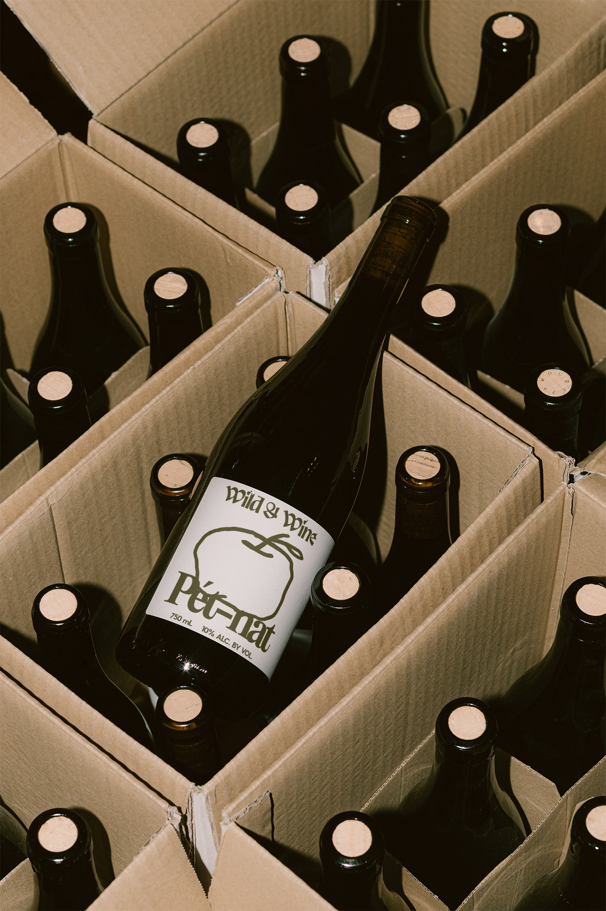
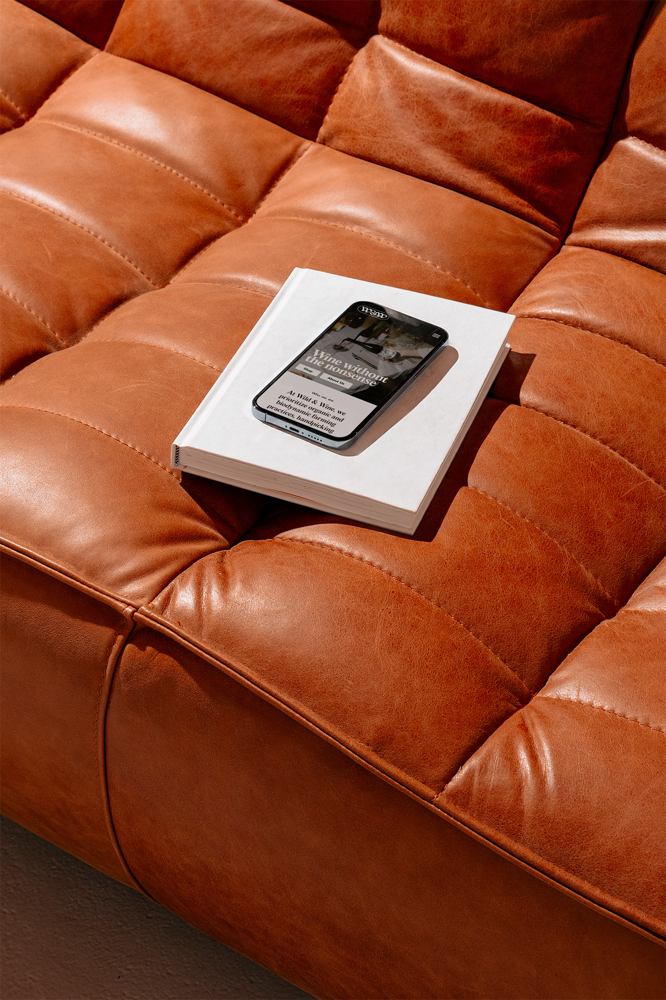
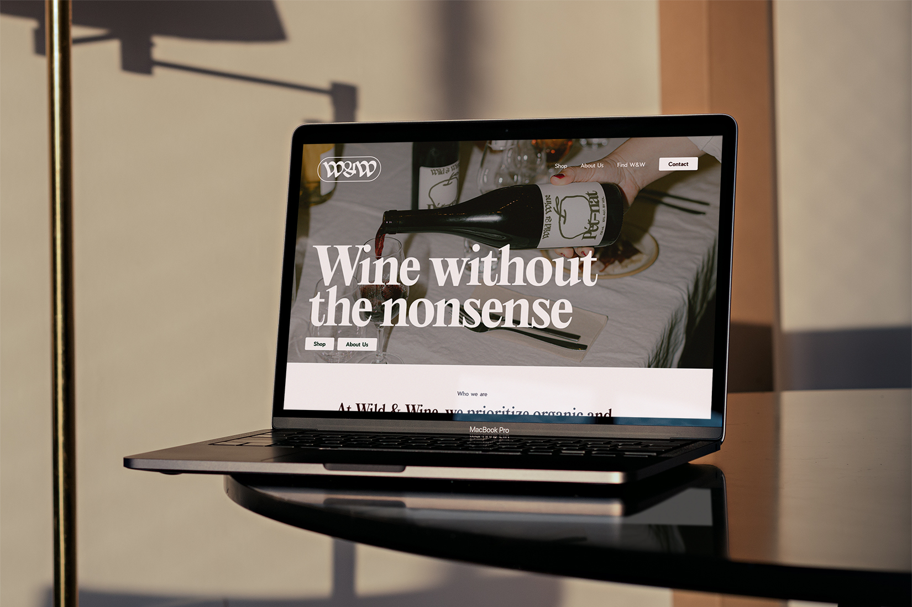
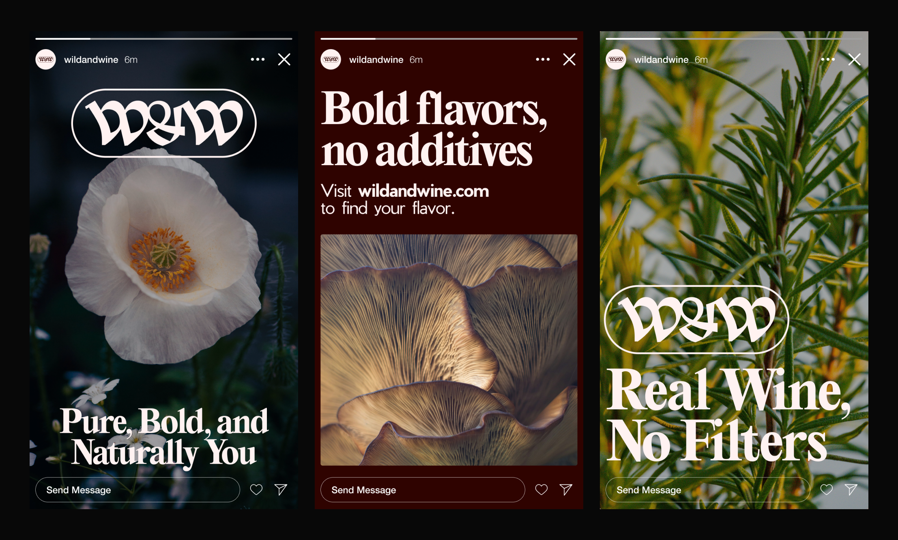
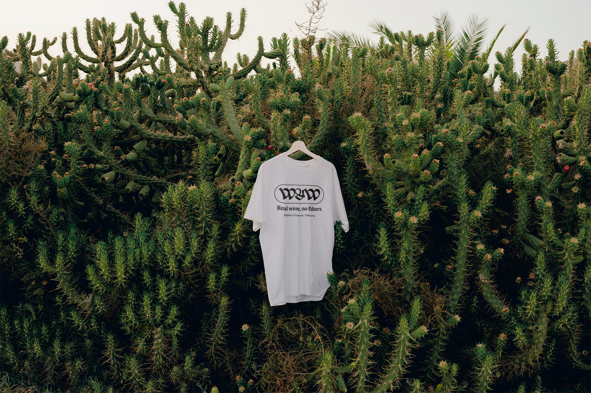

Brand identity
Brand development
Messaging
Wild & Wine
Wild & Wine is a natural wine company concept based in Sonoma, California, dedicated to crafting high-quality,
pure wines. W&W creates a product for a younger audience looking to get excited about the experience of
drinking and learning more about wines. Emphasizing bold flavors with no additives, Wild & Wine prides
itself on producing pure, unfiltered wines that embody authenticity and straightforward enjoyment. The
wines are made from 100% organic fruits using sustainable practices, native yeast fermentation, and
minimal intervention. With a commitment to natural, unaltered quality, Wild & Wine offers an honest and vibrant wine experience.






